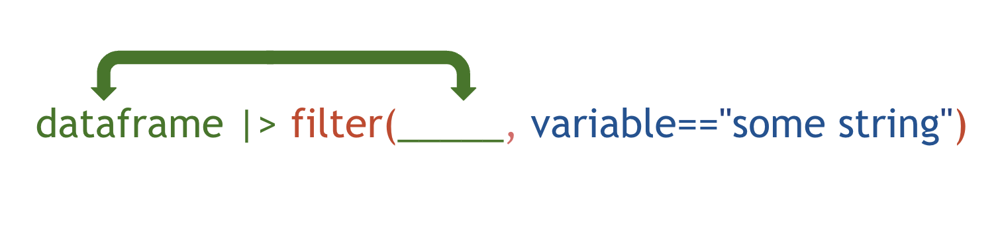

Exploring, arrange, count
Intro
In this lesson, we’re going to start exploring data with the package dplyr.
- It’s designed to work with data frames, which is what journalists are used to
- Great for data exploration and transformation
- Intuitive to write and easy to read, especially when using the “chaining” syntax of pipes
These are the functions/data analysis verbs we’ll be going over:
- filter()
- select()
- arrange()
- mutate()
- summarize() plus group_by()
First, let’s bring in the data.
Importing
We’re going to play around with historical FEMA disaster declaration data.
First steps when analyzing data in R.
Bring in the appropriate packages.
Let’s start out with tidyverse which is a suite of packages that are consistently used to import, wrangle, and visualize data. It’s one package that installs, like nearly a dozen other ones such as readr, dplyr, tidyr and ggplot2. The lubridate package is for dealing with dates.
And we’ll also need to bring the data in.
You can download it and import it locally, but if it’s a csv, you can just link to it and R will download it for you in the function.
Use the function from the readr package to import the csv from the URL. (This will take several moments to download, it’s a big file)
function starts with an r. two words separated with a “_”
library(dplyr)
library(readr)
library(lubridate)
#https://www.fema.gov/openfema-data-page/disaster-declarations-summaries-v2
df <- read_csv("https://www.fema.gov/api/open/v2/DisasterDeclarationsSummaries.csv")
library(dplyr)
library(readr)
library(lubridate)
#https://www.fema.gov/openfema-data-page/disaster-declarations-summaries-v2
df <- read_csv("https://www.fema.gov/api/open/v2/DisasterDeclarationsSummaries.csv")Exploring steps
What to do when you first get a data set? Poke around and see what you’re working with.
Use the function on the df object you imported into your R environment.
We want to look at all the columns available to work with in the data. In Excel, you could just open up the file and click and scroll around but this time we want to do it within the R environment.
Starts with a g Also, don’t forget that functions need parentheses.
glimpse(df)
glimpse(df)Range
Alright, we know that there are 28 different columns and more than 67,000 rows (each one a different disaster declaration) in this data set. That’s a lot to work with!
We also see in the <> what type of data is within each of the columns (you can’t mix).
<chr>for characters or strings<dbl>for numbers<dttm>for date times
So glimpse() only gave us a sample of the first few values in each column.
Next, we can drill down into individual columns we’re interested in.
incidentBeginDate could be useful if we want to track incidents overtime.
We should check how far back and how recent the incidents are.
Use a function on the df object to determine the range of dates for incidents.
function starts with an r. Also, in Base R, to focus on a single column in a data frame, you need a dollar sign between the data frame name and column name
range(df$incidentBeginDate)
range(df$incidentBeginDate)Table
Did any other columns catch your eye?
Hopefully incidentType did.
Let’s next get a sense of what type of disasters are listed in this data set.
In Base R, the quick way to do this is to use the function table() around a column and data frame.
Try using the function below on the column incidentType
In Base R, you need a special character between the data frame name and column name
table(df$incidentType)
table(df$incidentType)Count
Alright, you can see Biological, Chemical, Coastal Storm, etc…
It might take sometime to figure out which is the most… Since it’s ordered alphabetical.
So table() is a quick exploratory command from Base R but if you want to save it as a dataframe, then the dplyr method is better.
Use the count() function on df. Because we’re using a function from the dplyr library, which is part of the tidyverse suite of packages, then we don’t need to use a $ to focus on the specific column incidentType.
The function is structured so that the first argument in the function is always the data frame and second one is the column in the data frame, separated with a comma.
Try the count() function here on the incidentType column of df.
These are how tidy functions are structured: function_name(dataframe_name, column_name)
incident_types <- count(df, incidentType)
incident_types
incident_types <- count(df, incidentType)
incident_typesOkay, great. The default new column is named “n”.
We can change that by adding an extra argument to the count() function: name="name_of_column"
Fill out the code below but call the new column you’re creating “total”.
You’re passing it a string so make sure the column name is in between quotation marks
incident_types <- count(df, incidentType, name="total")
incident_types
incident_types <- count(df, incidentType, name="total")
incident_typesArrange
Great! Now we’re looking at table instead of a cluster of incident types.
This is much easier to scan.
But we’re still dealing with alphabetically sorted incidents.
We need to look at which disaster types have occurred most often over time.
We’re going to use a new function called arrange()
We have the new object data frame with the counts of incidents that you called incident_types.
We just need to use the arrange() function on the dataframe, specifically the new column you created called total.
Is your first argument in arrange() the name of the newer dataframe you created using count()?
Also, you don’t need to put “total” in quotation marks this time! Because column names aren’t strings. They’re objects.
incident_types_arranged <- arrange(incident_types, total)
incident_types_arranged
incident_types_arranged <- arrange(incident_types, total)
incident_types_arrangedArrange descending
Okay, this isn’t what we wanted. This is going in ascending order, aka, least to most.
We need most to least!
So we need to adjust the arrange() function with the desc() function wrapped around the column you’re sorting on.
You’re nesting functions.
Adjust your code from before but use the desc() formula, too.
Is your first argument in arrange() the name of the newer dataframe you created using count()?
Also, you don’t need to put “total” in quotation marks this time! Because column names aren’t strings. They’re objects.
incident_types_arranged <- arrange(incident_types, desc(total))
incident_types_arranged
incident_types_arranged <- arrange(incident_types, desc(total))
incident_types_arrangedGreat job!
We see that Severe Storms are the most-common disaster types declared.
Then, hurricanes and floods.
Pipes
Pipes is |> which represents “and then.”
It allows you to daisy chain functions to transform data in a more readable format. It’s very popular and more languages are implementing it. It works only if a function is structured in a way that the first argument is always the dataframe it’s altering. For example:

Here’s the code that got you to this point:
df <- read_csv("https://www.fema.gov/api/open/v2/DisasterDeclarationsSummaries.csv")
incident_types <- count(df, incidentType, name="total")
incident_types_arranged <- arrange(incident_types, desc(total))